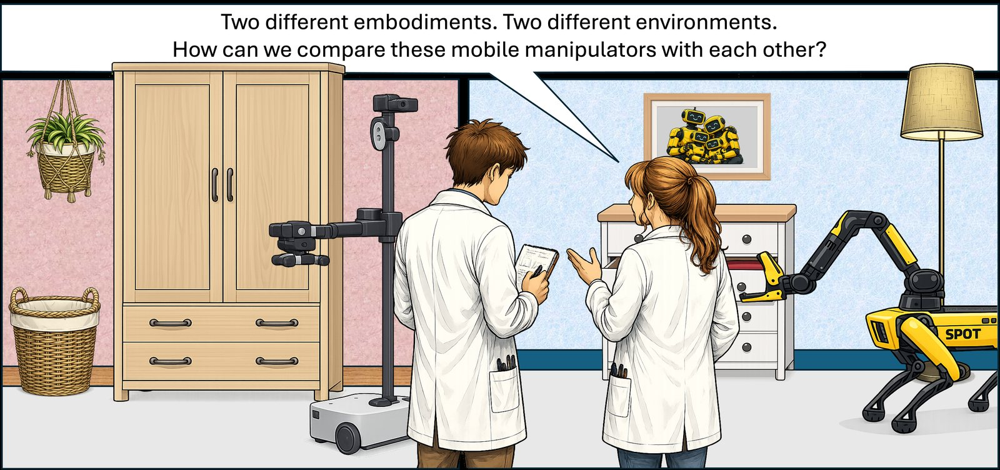
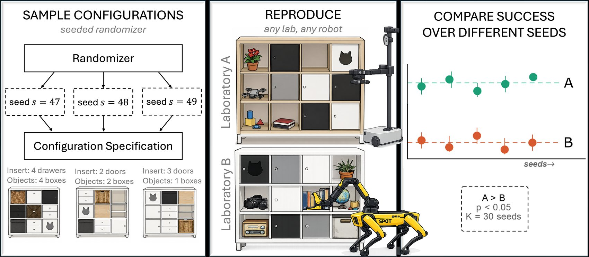
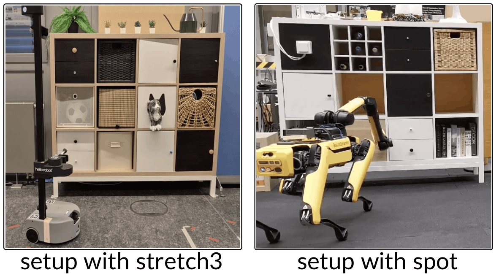

Benchmarking Real-World Robotic Manipulation through Stochastic Challenges
1 University of Bonn 2 ETH Zurich 3 Microsoft
† Correspondence: s6elglae@uni-bonn.de, gsikarog@uni-bonn.de, blumh@uni-bonn.de
TL;DR Don’t standardize the test set, standardize the distribution it is drawn from. Any lab draws seeds, rebuilds those scenes, and runs its own robot. Our variance analysis then tells you how many seeds you need before a difference in success rate means something.

Abstract
A challenging bottleneck in manipulation research is reproducibility and comparability of methods in real-world environments. Since manipulation is an interactive task, it cannot be evaluated on a static dataset of observations. Benchmarking in simulation is a common remedy, but cannot cover the whole complexity of real-world tests.
This paper proposes a new paradigm of stochastic challenges. Like the well-known YCB objects, it is based on reproducible real-world scenes and therefore allows system-level innovation and comparability between different platforms. Due to their stochastic nature, our challenges however mimic the rigor and surprise of hidden test sets. To this end, we show how different robots in different labs can be compared based on their success rate over different random task samples, if these samples come from the same distribution.
We propose stochastic challenges as a general paradigm for robot benchmarking and implement this paradigm in a novel benchmark for mobile manipulation, on which we compare two robots tested in two different labs.
One distribution, many labs
Fixed object sets such as YCB made manipulation research comparable, but a single hand-picked setup invites overfitting. Centralized competitions need every robot in one room. Recent distributed benchmarks standardize either the robot or the task, and stay on the tabletop.
Stochastic challenges standardize a sampled distribution of scenes and tasks. Any lab can rebuild any scene from its seed, but participants only see a small fraction of all possible scenes and cannot know the right answer ahead of time, much like the hidden test set of a dataset benchmark.
1. Sample
A seeded randomizer turns a seed into a complete configuration specification: which inserts go where, and which objects sit inside.
2. Reproduce
Any lab, with any robot, rebuilds the scene from the spec and runs the task set. Results go back to a central service.
3. Compare
Success is averaged over seeds. If the robots’ confidence intervals separate, the gap is real; if not, you need more seeds.

Share all seeds, some, or none
Two robots can be run on independent seeds, on identical seeds, or on a mix. Sharing seeds cancels scene difficulty, so it needs fewer scenes. Independent seeds test generalization better. The mixed design trades the two off, depending on how costly it is to rebuild a scene.
Independent, p = 0
Each robot sees its own seeds. Best test of generalization, most seeds needed.
Mixed, p = 0.5
Half of the seeds are shared. A practical compromise, and what we use in the study below.
Fully paired, p = 1
Identical scenes. Statistically most efficient, but the test set is known in advance.
Two sources of noise
We estimate a robot’s expected success over the whole distribution by averaging over repeated attempts, over the tasks in a scene, and over scenes. The uncertainty of that estimate has two parts.
Trial noise is what you get even on one fixed scene: some attempts succeed, some fail. More attempts per task, J, shrink it.
Configuration difficulty is how much success varies from seed to seed. Repeating a scene cannot reduce it. Only more seeds, K, can.
As J grows, the variance does not vanish. It settles at the floor σ²seed/K, which is why evaluating diverse scenes matters more than repeating the same setup.
This is the sample-size rule used throughout the paper: seeds per robot needed to detect a true gap δ when a fraction p of seeds is shared.
The KALLAX benchmark
To make this concrete, we built a mobile manipulation benchmark on IKEA KALLAX shelves. They are cheap, found everywhere, have standardized geometry, and come with doors, drawers and open cubbies to interact with.
Randomizer
A 3 × 4 grid, where each position stays empty with probability 0.5 and otherwise receives one of 82 KALLAX-compatible inserts. Configurations contain about 2.5 times as many door as drawer inserts, and each drawer insert has two drawers. Object-search tasks draw from 79 YCB objects. You can try the randomizer at the top of this page.
Tasks and success
Open a door or drawer, pick a specified object, or place an object in a target cubby. In our study, an opening counts only if the door or drawer moves by at least 10 cm.
Web platform
The benchmark website generates configurations with seeds, shows setup instructions and object lists, and exports task instances. A partner lab reproduces the scene, runs the tasks and uploads results.
A new seed is only released after the result for the previous seed has been submitted, so nobody can cherry-pick easy scenes.

Can we tell Spot and Stretch apart?
We ran 568 real-world trials with a Hello Robot Stretch 3 and a Boston Dynamics Spot with arm, in two labs. For doors, Spot ran 62 trials over 6 seeds and Stretch 130 trials over 7 seeds. For drawers, Spot ran 88 trials over 6 seeds and Stretch 288 trials over 8 seeds.
Detectable margin
Given the seeds we already have, what is the smallest gap we could resolve? With α = 0.10 and 80% power, both gaps are larger than that margin. Sharing half of the seeds (p = 0.5) shrinks the margin further.
| Task | Spot | Stretch | Gap | Margin, independent seeds | Margin, p = 0.5 |
|---|---|---|---|---|---|
| Door | 0.711 | 0.180 | 0.531 | 0.333 | 0.256 |
| Drawer | 0.879 | 0.635 | 0.244 | 0.232 | 0.183 |
Partial successes count as failures. Welch 95% confidence intervals for the Spot minus Stretch difference are 23.4 to 82.8 points for doors and 4.2 to 44.6 points for drawers. Halving a margin takes roughly four times as many seeds.
A few seeds can mislead
Success rates swing with the scenes you happen to draw. With few seeds, noise can even reverse the apparent ranking: on drawers, Spot on subset 1 (65.0%) scores below Stretch on subset 3 (70.7%), although Spot is clearly better overall.
| Test scenes | Drawers, Spot | Drawers, Stretch | Doors, Spot | Doors, Stretch |
|---|---|---|---|---|
| Same seeds | 92.7% | 58.1% | 86.3% | 12.8% |
| Subset 1 | 65.0% | 61.9% | 66.7% | 16.8% |
| Subset 2 | 100.0% | 51.3% | 75.0% | 20.2% |
| Subset 3 | 87.5% | 70.7% | 100.0% | 30.0% |
Averaged success rates on the same shelf configurations versus random subsets of seeds.
How many seeds does your study need?
Plug in estimates from a pilot run to plan a comparison with our sample-size rule. The defaults are only illustrative, because σ²seed and B depend on your robots and task.
Limitations
A considerable number of trials is needed to resolve a small performance margin. A single researcher rebuilt the shared-seed scenes in both labs, so we do not yet quantify variation between independent teams reconstructing the same configuration. Finally, the benchmark relies on honest, well-calibrated success reporting. Uploading execution videos, and eventually automated VLM-based checks, would improve verifiability.
BibTeX
@inproceedings{glasser2026stochastic,
title = {Benchmarking Real-World Robotic Manipulation through Stochastic Challenges},
author = {Gla{\ss}er, Elias and {\c{S}}ikaro{\u{g}}lu, G{\"u}lhan and Kupyn, Pavlo and Pollefeys, Marc and Bauer, Zuria and Blum, Hermann},
booktitle = {Conference on Robot Learning (CoRL)},
year = {2026}
}